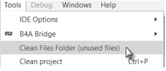

¿Quienes somos?
Somos estudiantes de media superior, que estudiamos solo con el proposito de compartir lo que algunos no pueden llegar a tener, como lo es la educacion, queremos un mejor futuro, pero para ello, necesitamos personas interesadas en aprender, interesadas en un Mejor mañana.
¿Como lo lograremos?
De esto va esta pagina enseñando de poco en poco, hoy aprendiste un error que tenias en tu programacion, mañana sera otra cosa y para eso estaremos nosotros, te daremos la informacion que necesites.
1: Unreachable code detected - Código inalcanzable detectado.
Unreachable code detected - Código inalcanzable detectado.
Hay algún código que nunca va a ser ejecutado.
Esto ocurre por ejemplo si tienes código en una subrutina después de una instrucción 'Return'
2: Not all code paths return a value - No todo el código devuelve un valor.
Sub Calc(Val1 As Double, Val2 As Double, Operation As String) As Double
Select Operation
Case "Add"
Return (Val1 + Val2)
Case "Sub"
Return (Val1 - Val2)
Case "Mult"
Return (Val1 * Val2)
Case "Div"
End Select
End Sub
En 'Case "Div"' No se devuelve ningún valor!
Otra manera de resolver el problema seria esta
愛してるよ
愛してるよ
愛してるよ
Sub Activity_KeyPress(KeyCode As Int) As Boolean
Private Answ As Int
Private Txt As String
If KeyCode = KeyCodes.KEYCODE_BACK Then' Comprueba si 'KeyCode' es la tecla 'Volver'
Txt = "Do you really want to quit the program ?"
Answ = Msgbox2(Txt,"A T T E N T I O N","Yes","","No",Null) ' MessageBox
If Answ = DialogResponse.POSITIVE Then ' Si el valor de vuelto es 'Si' entonces
Return False ' Return = False. el evento no es consumido
Else ' dejamos el programa
Return True ' Return = True El evento será consumido evitando
End If ' dejar el programa
Else
Return True ' Return = True El evento será consumido evitando
End If ' dejar el programa
End Sub
3: Return type (in Sub signature) should be set explicitly - El tipo de valor devuelto (en
declaración de Sub) se debe indicar de forma explícita.
Código incorrecto
Sub Calc(Val1 As Double, Val2 As Double, Operation As String)
Código correcto
Sub Calc(Val1 As Double, Val2 As Double, Operation As String) As Double
El tipo de valor devuelto debe ser declarado!
4: Return value is missing. Default value will be used instead - No se indica el valor devuelto,
se usará el valor por defecto.
Código incorrecto
Sub CalcSum(Val1 As Double, Val2 As Double) As Double
Private Sum As Double
Sum = Val1 + Val2
Return
End Sub
Código correcto
Sub CalcSum(Val1 As Double, Val2 As Double) As Double
Private Sum As Double
Sum = Val1 + Val2
Return Sum
End Sub
5: Variable declaration type is missing. String type will be used - Falta la declaración del tipo
de variable, se usará el tipo 'string'.
Código incorrecto
Sub Calc(Val1, Val2 As Double, Operation As String) As Double
Código correcto
Sub Calc(Val1 As Double, Val2 As Double, Operation As String) As Double
En las declaraciones de subrutinas cada variable necesita su propia declaración de tipo.
Pero en declaraciones 'Private', 'Public' o 'Dim' se permite lo siguiente, en la línea inferior ambas
variables son 'Doubles':
Private Val1, Val2 As Double
6: The following value misses screen units ('dip' or %x / %y): {1} - Falta indicar el tipo de
unidad de pantalla.
Código incorrecto
Activity.AddView(lblTest, 10, 10, 150, 50)
Código correcto
Activity.AddView(lblTest, 10dip, 10dip, 150dip, 50dip)
En el ejemplo superior tendrás cuatro advertencias, una por cada valor.
Para dimensiones de una 'view' debes usar unidades 'dip', '%x' o '%y' .
Ver el capítulo 5.1 Funciones especiales como 50%x, 50dip
7: Object converted to String. This is probably a programming mistake - Objeto convertido a
'String', esto es probablemente un error de programación.
Cuando nos aparece esto es porque tenemos una falta de ortografia
8: Undeclared variable '{1}' - Variable no declarada
Código incorrecto
Sub SetHeight
h = 10dip
End Sub
Código correcto
Sub SetHeight
Private h As Int
h = 10dip
End Sub
La variable h no ha sido declarada. Estará resaltada en color rojo.
9: Unused variable '{1}' - Variable no utilizada.
Sub SetHeight
Private h As Int
h = 10dip
End Sub
Esta advertencia indica que la variable h no se usa.
Se ha declarado y asignado un valor, pero no se usa!
Este código no da ninguna advertencia porque la variable h se utiliza:
Sub SetHeight
Private h As Int
h = 10dip
lblTest.Height = h
End Sub
10: Variable '{1}' is never assigned any value - A la variable nunca se le ha asignado un valor
Sub Test
Private h As Int
End Sub
Esta advertencia nos dice que la variable h se ha declarado pero no se le ha asignado ningún valor.
Código correcto, ver arriba.
11: Variable '{1}' was not initialized - La variable no fue inicializada.
Código incorrecto
Private lst As List
lst.Add("Test1")
Código correcto
Private lst As List
lst.Initialize
lst.Add("Test1")
Variables ('objects') como 'List' o 'Map' deben ser inicializadas antes de que puedan ser utilizadas.
Las 'Views' añadidas mediante código también deben ser inicializadas antes de que puedan ser
añadidas a una 'View' padre
12: Sub '{1}' is not used - La subrutina no se ha utilizado
La advertencia se muestra si una subrutina nunca es utilizada
13: Variable '{1}' should be declared in Sub Process_Globals - La variable debe ser declarada
en 'Process_Globals'.
Código incorrecto :
Sub Globals
Public Timer1 As Timer
Public GPS1 As GPS
Código correcto :
Sub Process_Globals
Public Timer1 As Timer
Public GPS1 As GPS
14: File '{1}' in Files folder was not added to the Files tab.
Estas usando un archivo que está en la carpeta 'Files', pero no ha sido añadido a la pestaña „Files
Manager‟.
Debes:
- Hacer una copia de seguridad del archivo.
- Borrarlo de la carpeta 'Files'.
- Añadirlo al proyecto en la pestaña „Files Manager‟.
- Usar Limpiar archivos no usados) en el menú „Tools

15: File '{1}' is not used - El archivo no se utiliza.
Tienes archivos en la carpeta 'Files' que no se utilizan.
Debes eliminarlos de la carpeta 'Files'.
O puedes limpiar la carpeta 'Files' desde el menú „Tools‟ (ver arriba).
16: Layout file '{1}' is not used. Are you missing a call to Activity.LoadLayout? - El archivo
de diseño no se utiliza, ¿has olvidado una llamada a Activity.LoadLayout?
Tienes un archivo de diseño en la carpeta 'Files' que no se utiliza.
Debes añadir 'LoadLayout' o eliminar el archivo de la carpeta 'Files'.
O puedes limpiar la carpeta 'Files' desde el menú „Tools‟.
17: File '{1}' is missing from the Files tab - Falta el archivo de la pestaña „Files Manager‟.
El archivo aparece en la pestaña „Files Manager‟ pero no está en la carpeta 'Files'. Debes añadirlo.
Ver capítulo 4.3.2 Files
18: TextSize value should not be scaled as it is scaled internally - El tamaño del texto no debe
ser escalado ya que se escala internamente.
Código incorrecto
lblTest.TextSize = 16dip
Código correcto
lblTest.TextSize = 16
Los valores de 'TextSize' son independientes de la densidad de píxeles . Su unidad es el punto
tipográfico, una unidad tipográfica, y deben ser valores absolutos, no valores 'dip'.
19: Empty Catch block. You should at least add Log(LastException.Message) - Bloque
'Catch' vacío, debes agregar al menos Log(LastException.Message).
Código incorrecto
Try
imvImage.Bitmap = LoadBitmap(File.DirRootExternal, "image.jpg")
Catch
End Try
Código correcto
Try
imvImage.Bitmap = LoadBitmap(File.DirRootExternal, "image.jpg")
Catch
Log(LastException.Message)
End Try
Se recomienda añadir al menos 'Log(LastException.Message)' en el bloque 'Catch' en lugar de
dejarlo vacío.
20: View '{1}' was added with the designer. You should not initialize it - La 'View' fue
añadida con el diseñador, no debe ser inicializada.
Una 'View' definida con el diseñador en un archivo de diseño, no debe ser inicializada!
Sólo las 'Views' añadidas por código deben ser inicializadas.
21: Cannot access view's dimension before it is added to its parent - No se puede acceder a las
dimensiones de la 'View' antes de añadirla a su 'View' padre.
Debes añadir la 'View' a una 'View' padre antes de poder acceder a sus dimensiones.
Cuando añades una 'View' mediante código sus dimensiones se definen al añadirla con 'AddView'.
22: Types do not match - Los tipos no coinciden.
Prueba revisar tus archivos
23: Modal dialogs are not allowed in Sub Activity_Pause. It will be ignored - No se permiten
diálogos modales en la sub 'Activity_Pause', seran ignorados.
Los diálogos modales como 'MessageBox' no deben ser usados en la rutina 'Activity_Pause'.
24: Accessing fields from other modules in Sub Process_Globals can be dangerous as the
initialization order is not deterministic - Acceder a los campos de otros módulos en
'Process_Globals' puede ser peligroso ya que el orden de inicialización no es determinista.
El mismo texto te dice.
28: It is recommended to use a custom theme or the default theme.
Remove SetApplicationAttribute(android:theme, “@android:style/Theme.Holo”) from the
manifest editior.
- Se recomienda el uso de un tema personalizado o el tema por defecto. Elimina
'SetApplicationAttribute(android:theme, "@android:style/Theme.Holo") del editor de manifiesto.
Esto se añadía automáticamente en las versiones anteriores de B4A. No se necesita más.
32: Library „xxxx‟ is not used - La librería no se usa.
Quita la librería no usada.
En caso de mas dudas que tengas puedes ir a estas paginas:
1.-GUIA HTML
1.-GUIA HTML
1.-GUIA HTML
ShEOlWoLF´S LAND
“La vida es demasiado corta para tener miedo”
“El mundo necesita que digamos nuestros sueños”
“Persigue tus deseos”
El trabajo agotador es el mayor placer que nos da la vida
Tambien contamos con las guias de b4a para gente avanzada:
Volver al manual